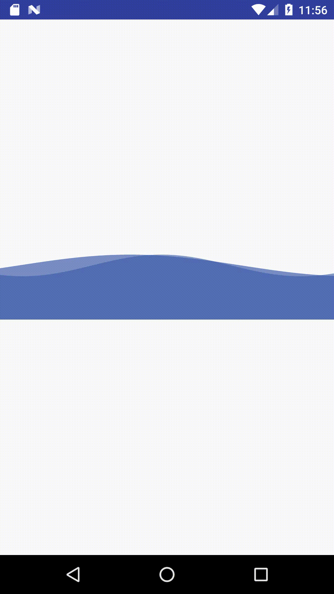
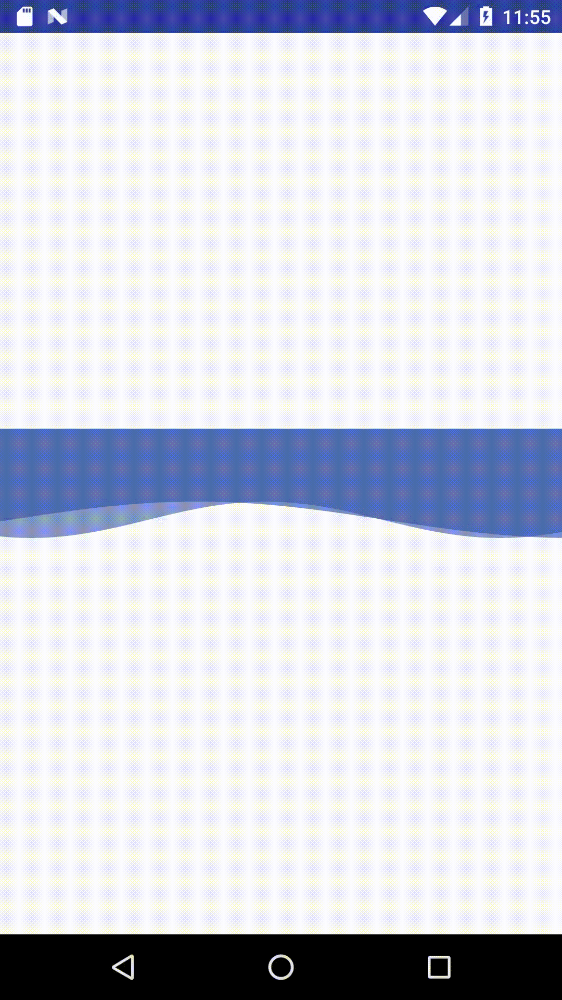

<!DOCTYPE html><html lang="[&quot;zh-CN&quot;,&quot;en&quot;,&quot;default&quot;]"><head><meta charset="UTF-8"><meta http-equiv="X-UA-Compatible" content="IE=edge"><meta name="viewport" content="width=device-width, initial-scale=1, maximum-scale=1"><meta name="description" content="Android 实现水波浪效果"><meta name="keywords" content="自定义View"><meta name="author" content="flueky"><meta name="copyright" content="flueky"><title>Android 实现水波浪效果 | Flueky 技术小站</title><link rel="shortcut icon" href="/test/melody-favicon.ico"><link rel="stylesheet" href="/test/css/index.css?version=1.9.1"><link rel="stylesheet" href="https://cdn.jsdelivr.net/npm/font-awesome@latest/css/font-awesome.min.css?version=1.9.1"><meta name="format-detection" content="telephone=no"><meta http-equiv="x-dns-prefetch-control" content="on"><link rel="dns-prefetch" href="https://cdn.jsdelivr.net"><meta http-equiv="Cache-Control" content="no-transform"><meta http-equiv="Cache-Control" content="no-siteapp"><script>var GLOBAL_CONFIG = { 
  root: '/test/',
  algolia: undefined,
  localSearch: undefined,
  copy: {
    success: 'Copy successfully',
    error: 'Copy error',
    noSupport: 'The browser does not support'
  },
  hexoVersion: '6.3.0'
} </script><meta name="generator" content="Hexo 6.3.0"></head><body><i class="fa fa-arrow-right" id="toggle-sidebar" aria-hidden="true"></i><div id="sidebar" data-display="true"><div class="toggle-sidebar-info text-center"><span data-toggle="Toggle article">Toggle site</span><hr></div><div class="sidebar-toc"><div class="sidebar-toc__title">Catalog</div><div class="sidebar-toc__progress"><span class="progress-notice">You've read</span><span class="progress-num">0</span><span class="progress-percentage">%</span><div class="sidebar-toc__progress-bar"></div></div><div class="sidebar-toc__content"><ol class="toc"><li class="toc-item toc-level-2"><a class="toc-link" href="#1-%E6%95%88%E6%9E%9C%E5%9B%BE"><span class="toc-number">1.</span> <span class="toc-text">1 效果图</span></a></li><li class="toc-item toc-level-2"><a class="toc-link" href="#2-%E5%8E%9F%E7%90%86"><span class="toc-number">2.</span> <span class="toc-text">2 原理</span></a></li><li class="toc-item toc-level-2"><a class="toc-link" href="#3-%E5%AE%9E%E7%8E%B0"><span class="toc-number">3.</span> <span class="toc-text">3 实现</span></a><ol class="toc-child"><li class="toc-item toc-level-3"><a class="toc-link" href="#3-1-%E8%87%AA%E5%AE%9A%E4%B9%89%E5%B1%9E%E6%80%A7"><span class="toc-number">3.1.</span> <span class="toc-text">3.1 自定义属性</span></a></li><li class="toc-item toc-level-3"><a class="toc-link" href="#3-2-%E4%BB%A3%E7%A0%81"><span class="toc-number">3.2.</span> <span class="toc-text">3.2 代码</span></a><ol class="toc-child"><li class="toc-item toc-level-4"><a class="toc-link" href="#3-2-1-%E5%88%9D%E5%A7%8B%E5%8C%96%E5%8F%82%E6%95%B0"><span class="toc-number">3.2.1.</span> <span class="toc-text">3.2.1 初始化参数</span></a></li><li class="toc-item toc-level-4"><a class="toc-link" href="#3-2-2-%E6%B5%8B%E9%87%8F%E9%AB%98%E5%BA%A6"><span class="toc-number">3.2.2.</span> <span class="toc-text">3.2.2 测量高度</span></a></li><li class="toc-item toc-level-4"><a class="toc-link" href="#3-2-3-%E7%BB%98%E5%88%B6%E5%B9%B6%E5%88%B7%E6%96%B0%E6%B3%A2%E6%B5%AA"><span class="toc-number">3.2.3.</span> <span class="toc-text">3.2.3 绘制并刷新波浪</span></a></li></ol></li><li class="toc-item toc-level-3"><a class="toc-link" href="#3-3-%E5%8F%A0%E5%8A%A0%E4%BD%BF%E7%94%A8"><span class="toc-number">3.3.</span> <span class="toc-text">3.3 叠加使用</span></a></li></ol></li></ol></div></div><div class="author-info hide"><div class="author-info__avatar text-center"></div><div class="author-info__name text-center">flueky</div><div class="author-info__description text-center">小飞哥的个人博客主页</div><hr><div class="author-info-articles"><a class="author-info-articles__archives article-meta" href="/test/archives"><span class="pull-left">Articles</span><span class="pull-right">37</span></a><a class="author-info-articles__tags article-meta" href="/test/tags"><span class="pull-left">Tags</span><span class="pull-right">10</span></a><a class="author-info-articles__categories article-meta" href="/test/categories"><span class="pull-left">Categories</span><span class="pull-right">7</span></a></div></div></div><div id="content-outer"><div class="no-bg" id="top-container"><div id="page-header"><span class="pull-left"> <a id="site-name" href="/test/">Flueky 技术小站</a></span><i class="fa fa-bars toggle-menu pull-right" aria-hidden="true"></i><span class="pull-right"></span></div><div id="post-info"><div id="post-title">Android 实现水波浪效果</div><div id="post-meta"><time class="post-meta__date"><i class="fa fa-calendar" aria-hidden="true"></i> 2018-07-14</time><span class="post-meta__separator">|</span><i class="fa fa-inbox post-meta__icon" aria-hidden="true"></i><a class="post-meta__categories" href="/test/categories/Android/">Android</a></div></div></div><div class="layout" id="content-inner"><article id="post"><div class="article-container" id="post-content"><p>讲真，这不算一个新的课题。早在几个月之前就已经有大神开源了水波浪效果的代码。由于工作关系，一直未能拜读。直至近期公司项目有需要，才决定去接触下该效果。</p>
<span id="more"></span>

<p>同时申明一下，在能力范围之内，楼主愿意不惜一切时间代价去造轮子，因为出现bug时，改自己熟悉的代码会很省事。同时也是对技能的巩固和提升。</p>
<p>目前，已经发表的博文中，实现水波纹的效果大致分为两类：</p>
<ol>
<li>使用贝塞尔曲线。</li>
<li>使用三角函数曲线。</li>
</ol>
<p>在物理学中，通常使用三角函数表达式从数学的角度描述波的特征，如：机械波、声波等。因此楼主即使用三角函数实现水波纹效果。</p>
<p><strong>机械波表达式：Y＝A*sin(ωt+Φ)</strong></p>
<h2 id="1-效果图"><a href="#1-效果图" class="headerlink" title="1 效果图"></a>1 效果图</h2><p>二话不说，先上图，觉得效果好再往下看。</p>



<p>这是一种组合的实现方式：两个水波浪组件叠加，再在水波浪组件上面或下面添加一个矩形的蓝色块。采用组合方式，主要使组件具有更高的扩展性。</p>
<p>布局如下：</p>
<figure class="highlight xml"><table><tr><td class="gutter"><pre><span class="line">1</span><br><span class="line">2</span><br><span class="line">3</span><br><span class="line">4</span><br><span class="line">5</span><br><span class="line">6</span><br><span class="line">7</span><br><span class="line">8</span><br><span class="line">9</span><br><span class="line">10</span><br><span class="line">11</span><br><span class="line">12</span><br><span class="line">13</span><br><span class="line">14</span><br><span class="line">15</span><br><span class="line">16</span><br><span class="line">17</span><br><span class="line">18</span><br><span class="line">19</span><br><span class="line">20</span><br><span class="line">21</span><br><span class="line">22</span><br><span class="line">23</span><br><span class="line">24</span><br><span class="line">25</span><br><span class="line">26</span><br><span class="line">27</span><br><span class="line">28</span><br><span class="line">29</span><br></pre></td><td class="code"><pre><span class="line"></span><br><span class="line"><span class="comment">&lt;!-- 矩形方块 --&gt;</span></span><br><span class="line"><span class="tag">&lt;<span class="name">View</span></span></span><br><span class="line"><span class="tag">    <span class="attr">android:layout_width</span>=<span class="string">&quot;match_parent&quot;</span></span></span><br><span class="line"><span class="tag">    <span class="attr">android:layout_height</span>=<span class="string">&quot;@dimen/dp_100_h&quot;</span></span></span><br><span class="line"><span class="tag">    <span class="attr">android:background</span>=<span class="string">&quot;#DD3958AA&quot;</span> /&gt;</span></span><br><span class="line"></span><br><span class="line"><span class="comment">&lt;!-- 水波浪组件叠加 --&gt;</span></span><br><span class="line"><span class="tag">&lt;<span class="name">RelativeLayout</span></span></span><br><span class="line"><span class="tag">    <span class="attr">android:layout_width</span>=<span class="string">&quot;match_parent&quot;</span></span></span><br><span class="line"><span class="tag">    <span class="attr">android:layout_height</span>=<span class="string">&quot;wrap_content&quot;</span>&gt;</span></span><br><span class="line"></span><br><span class="line">    <span class="tag">&lt;<span class="name">com.flueky.frame.widget.WaveView</span></span></span><br><span class="line"><span class="tag">        <span class="attr">android:layout_width</span>=<span class="string">&quot;match_parent&quot;</span></span></span><br><span class="line"><span class="tag">        <span class="attr">android:layout_height</span>=<span class="string">&quot;@dimen/dp_50_h&quot;</span></span></span><br><span class="line"><span class="tag">        <span class="attr">app:color</span>=<span class="string">&quot;#993958AA&quot;</span></span></span><br><span class="line"><span class="tag">        <span class="attr">app:fill_mode</span>=<span class="string">&quot;top&quot;</span></span></span><br><span class="line"><span class="tag">        <span class="attr">app:omega</span>=<span class="string">&quot;1.2&quot;</span></span></span><br><span class="line"><span class="tag">        <span class="attr">app:phi</span>=<span class="string">&quot;1&quot;</span></span></span><br><span class="line"><span class="tag">        <span class="attr">app:speed</span>=<span class="string">&quot;-5&quot;</span> /&gt;</span></span><br><span class="line"></span><br><span class="line">    <span class="tag">&lt;<span class="name">com.flueky.frame.widget.WaveView</span></span></span><br><span class="line"><span class="tag">        <span class="attr">android:layout_width</span>=<span class="string">&quot;match_parent&quot;</span></span></span><br><span class="line"><span class="tag">        <span class="attr">android:layout_height</span>=<span class="string">&quot;@dimen/dp_50_h&quot;</span></span></span><br><span class="line"><span class="tag">        <span class="attr">app:color</span>=<span class="string">&quot;#AA3958AA&quot;</span></span></span><br><span class="line"><span class="tag">        <span class="attr">app:fill_mode</span>=<span class="string">&quot;top&quot;</span></span></span><br><span class="line"><span class="tag">        <span class="attr">app:phi</span>=<span class="string">&quot;100&quot;</span></span></span><br><span class="line"><span class="tag">        <span class="attr">app:speed</span>=<span class="string">&quot;-5&quot;</span> /&gt;</span></span><br><span class="line"><span class="tag">&lt;/<span class="name">RelativeLayout</span>&gt;</span></span><br></pre></td></tr></table></figure>

<h2 id="2-原理"><a href="#2-原理" class="headerlink" title="2 原理"></a>2 原理</h2><p>分析机械波公式，有三个常量参数：<code>A</code>、<code>ω</code>和<code>Φ</code>。</p>
<ol>
<li><code>A</code> 对应组件高度的一半。</li>
<li><code>ω</code> 对应自定义属性 <code>omega</code>。</li>
<li><code>Φ</code> 对应自定义属性 <code>phi</code>。</li>
</ol>
<p>通过 <code>ω</code>和<code>Φ</code> 决定波浪的初始状态，使用<code>speed</code>属性决定波浪变化速率。</p>
<h2 id="3-实现"><a href="#3-实现" class="headerlink" title="3 实现"></a>3 实现</h2><h3 id="3-1-自定义属性"><a href="#3-1-自定义属性" class="headerlink" title="3.1 自定义属性"></a>3.1 自定义属性</h3><figure class="highlight xml"><table><tr><td class="gutter"><pre><span class="line">1</span><br><span class="line">2</span><br><span class="line">3</span><br><span class="line">4</span><br><span class="line">5</span><br><span class="line">6</span><br><span class="line">7</span><br><span class="line">8</span><br><span class="line">9</span><br><span class="line">10</span><br><span class="line">11</span><br><span class="line">12</span><br><span class="line">13</span><br><span class="line">14</span><br><span class="line">15</span><br><span class="line">16</span><br><span class="line">17</span><br></pre></td><td class="code"><pre><span class="line"><span class="tag">&lt;<span class="name">declare-styleable</span> <span class="attr">name</span>=<span class="string">&quot;wave&quot;</span>&gt;</span></span><br><span class="line">    <span class="comment">&lt;!-- 波浪颜色 --&gt;</span></span><br><span class="line">    <span class="tag">&lt;<span class="name">attr</span> <span class="attr">name</span>=<span class="string">&quot;color&quot;</span> <span class="attr">format</span>=<span class="string">&quot;color&quot;</span> /&gt;</span></span><br><span class="line">    <span class="comment">&lt;!-- 填充模式 --&gt;</span></span><br><span class="line">    <span class="tag">&lt;<span class="name">attr</span> <span class="attr">name</span>=<span class="string">&quot;fill_mode&quot;</span>&gt;</span></span><br><span class="line">        <span class="comment">&lt;!-- 填充顶部，使顶部是直线，底部是波浪线 --&gt;</span></span><br><span class="line">        <span class="tag">&lt;<span class="name">enum</span> <span class="attr">name</span>=<span class="string">&quot;top&quot;</span> <span class="attr">value</span>=<span class="string">&quot;1&quot;</span> /&gt;</span></span><br><span class="line">        <span class="comment">&lt;!-- 填充底部，使底部是直线，顶部是波浪线 --&gt;</span></span><br><span class="line">        <span class="tag">&lt;<span class="name">enum</span> <span class="attr">name</span>=<span class="string">&quot;bottom&quot;</span> <span class="attr">value</span>=<span class="string">&quot;2&quot;</span> /&gt;</span></span><br><span class="line">    <span class="tag">&lt;/<span class="name">attr</span>&gt;</span></span><br><span class="line">    <span class="comment">&lt;!-- 波浪变化速率，&lt;0 向右的小伙，&gt;0 向左的效果--&gt;</span></span><br><span class="line">    <span class="tag">&lt;<span class="name">attr</span> <span class="attr">name</span>=<span class="string">&quot;speed&quot;</span> <span class="attr">format</span>=<span class="string">&quot;integer&quot;</span> /&gt;</span></span><br><span class="line">    <span class="comment">&lt;!-- 水波浪初始状态相位角  --&gt;</span></span><br><span class="line">    <span class="tag">&lt;<span class="name">attr</span> <span class="attr">name</span>=<span class="string">&quot;phi&quot;</span> <span class="attr">format</span>=<span class="string">&quot;integer&quot;</span> /&gt;</span></span><br><span class="line">    <span class="comment">&lt;!-- 水波浪角频率，默认值 1，显示一个三角函数周期  --&gt;</span></span><br><span class="line">    <span class="tag">&lt;<span class="name">attr</span> <span class="attr">name</span>=<span class="string">&quot;omega&quot;</span> <span class="attr">format</span>=<span class="string">&quot;float&quot;</span>/&gt;</span></span><br><span class="line"><span class="tag">&lt;/<span class="name">declare-styleable</span>&gt;</span></span><br></pre></td></tr></table></figure>

<h3 id="3-2-代码"><a href="#3-2-代码" class="headerlink" title="3.2 代码"></a>3.2 代码</h3><p>不喜欢看又臭又长的代码请跳过，后面有分析。（平生最恨只贴代码不分析的博主）</p>
<figure class="highlight java"><table><tr><td class="gutter"><pre><span class="line">1</span><br><span class="line">2</span><br><span class="line">3</span><br><span class="line">4</span><br><span class="line">5</span><br><span class="line">6</span><br><span class="line">7</span><br><span class="line">8</span><br><span class="line">9</span><br><span class="line">10</span><br><span class="line">11</span><br><span class="line">12</span><br><span class="line">13</span><br><span class="line">14</span><br><span class="line">15</span><br><span class="line">16</span><br><span class="line">17</span><br><span class="line">18</span><br><span class="line">19</span><br><span class="line">20</span><br><span class="line">21</span><br><span class="line">22</span><br><span class="line">23</span><br><span class="line">24</span><br><span class="line">25</span><br><span class="line">26</span><br><span class="line">27</span><br><span class="line">28</span><br><span class="line">29</span><br><span class="line">30</span><br><span class="line">31</span><br><span class="line">32</span><br><span class="line">33</span><br><span class="line">34</span><br><span class="line">35</span><br><span class="line">36</span><br><span class="line">37</span><br><span class="line">38</span><br><span class="line">39</span><br><span class="line">40</span><br><span class="line">41</span><br><span class="line">42</span><br><span class="line">43</span><br><span class="line">44</span><br><span class="line">45</span><br><span class="line">46</span><br><span class="line">47</span><br><span class="line">48</span><br><span class="line">49</span><br><span class="line">50</span><br><span class="line">51</span><br><span class="line">52</span><br><span class="line">53</span><br><span class="line">54</span><br><span class="line">55</span><br><span class="line">56</span><br><span class="line">57</span><br><span class="line">58</span><br><span class="line">59</span><br><span class="line">60</span><br><span class="line">61</span><br><span class="line">62</span><br><span class="line">63</span><br><span class="line">64</span><br><span class="line">65</span><br><span class="line">66</span><br><span class="line">67</span><br><span class="line">68</span><br><span class="line">69</span><br><span class="line">70</span><br><span class="line">71</span><br><span class="line">72</span><br><span class="line">73</span><br><span class="line">74</span><br><span class="line">75</span><br><span class="line">76</span><br><span class="line">77</span><br><span class="line">78</span><br><span class="line">79</span><br><span class="line">80</span><br><span class="line">81</span><br><span class="line">82</span><br><span class="line">83</span><br><span class="line">84</span><br><span class="line">85</span><br><span class="line">86</span><br><span class="line">87</span><br><span class="line">88</span><br><span class="line">89</span><br><span class="line">90</span><br><span class="line">91</span><br><span class="line">92</span><br><span class="line">93</span><br><span class="line">94</span><br><span class="line">95</span><br><span class="line">96</span><br><span class="line">97</span><br><span class="line">98</span><br><span class="line">99</span><br><span class="line">100</span><br><span class="line">101</span><br><span class="line">102</span><br><span class="line">103</span><br><span class="line">104</span><br><span class="line">105</span><br><span class="line">106</span><br><span class="line">107</span><br><span class="line">108</span><br><span class="line">109</span><br><span class="line">110</span><br><span class="line">111</span><br><span class="line">112</span><br><span class="line">113</span><br><span class="line">114</span><br><span class="line">115</span><br></pre></td><td class="code"><pre><span class="line"><span class="keyword">public</span> <span class="keyword">class</span> <span class="title class_">WaveView</span> <span class="keyword">extends</span> <span class="title class_">View</span> &#123;</span><br><span class="line">    <span class="keyword">private</span> <span class="keyword">static</span> <span class="keyword">final</span> <span class="type">String</span> <span class="variable">TAG</span> <span class="operator">=</span> <span class="string">&quot;WaveView&quot;</span>;</span><br><span class="line">    <span class="keyword">private</span> <span class="type">int</span> <span class="variable">width</span> <span class="operator">=</span> <span class="number">0</span>;</span><br><span class="line">    <span class="keyword">private</span> <span class="type">int</span> <span class="variable">height</span> <span class="operator">=</span> <span class="number">0</span>;</span><br><span class="line">    <span class="keyword">private</span> Path shapePath;</span><br><span class="line">    <span class="keyword">private</span> <span class="type">int</span> <span class="variable">step</span> <span class="operator">=</span> <span class="number">20</span>;</span><br><span class="line">    <span class="keyword">private</span> Paint fillPaint;</span><br><span class="line"></span><br><span class="line">    <span class="keyword">private</span> <span class="type">double</span> omega;</span><br><span class="line">    <span class="keyword">private</span> <span class="type">double</span> phi;</span><br><span class="line">    <span class="keyword">private</span> <span class="type">int</span> <span class="variable">delta</span> <span class="operator">=</span> -<span class="number">2</span>;<span class="comment">//每次位移角度，大于0向左，小于0 向右</span></span><br><span class="line">    <span class="keyword">private</span> <span class="type">boolean</span> <span class="variable">fillTop</span> <span class="operator">=</span> <span class="literal">true</span>;</span><br><span class="line">    <span class="keyword">private</span> <span class="type">int</span> waveColor;</span><br><span class="line"></span><br><span class="line">    <span class="keyword">public</span> <span class="title function_">WaveView</span><span class="params">(Context context)</span> &#123;</span><br><span class="line">        <span class="built_in">this</span>(context, <span class="literal">null</span>);</span><br><span class="line">    &#125;</span><br><span class="line"></span><br><span class="line">    <span class="keyword">public</span> <span class="title function_">WaveView</span><span class="params">(Context context, <span class="meta">@Nullable</span> AttributeSet attrs)</span> &#123;</span><br><span class="line">        <span class="built_in">this</span>(context, attrs, <span class="number">0</span>);</span><br><span class="line">    &#125;</span><br><span class="line"></span><br><span class="line">    <span class="keyword">public</span> <span class="title function_">WaveView</span><span class="params">(Context context, <span class="meta">@Nullable</span> AttributeSet attrs, <span class="type">int</span> defStyleAttr)</span> &#123;</span><br><span class="line">        <span class="built_in">super</span>(context, attrs, defStyleAttr);</span><br><span class="line">        <span class="type">TypedArray</span> <span class="variable">typedArray</span> <span class="operator">=</span> context.obtainStyledAttributes(attrs, R.styleable.wave);</span><br><span class="line">        initParams(context, typedArray);</span><br><span class="line">        typedArray.recycle();</span><br><span class="line">    &#125;</span><br><span class="line"></span><br><span class="line">    <span class="meta">@RequiresApi(api = Build.VERSION_CODES.LOLLIPOP)</span></span><br><span class="line">    <span class="keyword">public</span> <span class="title function_">WaveView</span><span class="params">(Context context, <span class="meta">@Nullable</span> AttributeSet attrs, <span class="type">int</span> defStyleAttr, <span class="type">int</span> defStyleRes)</span> &#123;</span><br><span class="line">        <span class="built_in">super</span>(context, attrs, defStyleAttr, defStyleRes);</span><br><span class="line">        <span class="type">TypedArray</span> <span class="variable">typedArray</span> <span class="operator">=</span> context.obtainStyledAttributes(attrs, R.styleable.wave);</span><br><span class="line">        initParams(context, typedArray);</span><br><span class="line">        typedArray.recycle();</span><br><span class="line">    &#125;</span><br><span class="line"></span><br><span class="line"></span><br><span class="line">    <span class="keyword">private</span> <span class="keyword">void</span> <span class="title function_">initParams</span><span class="params">(Context context, TypedArray typedArray)</span> &#123;</span><br><span class="line"></span><br><span class="line">        waveColor = typedArray.getColor(R.styleable.wave_color, Color.parseColor(<span class="string">&quot;#3958AA&quot;</span>));</span><br><span class="line">        fillTop = typedArray.getInt(R.styleable.wave_fill_mode, <span class="number">1</span>) == <span class="number">1</span>;<span class="comment">// 默认绘制上层</span></span><br><span class="line">        delta = typedArray.getInt(R.styleable.wave_speed, -<span class="number">2</span>); <span class="comment">//默认向右移动</span></span><br><span class="line">        omega = typedArray.getFloat(R.styleable.wave_omega, <span class="number">3</span> * <span class="number">1.0f</span> / <span class="number">4</span>);<span class="comment">// 角频率</span></span><br><span class="line">        phi = typedArray.getInt(R.styleable.wave_phi, <span class="number">0</span>) * Math.PI / <span class="number">180</span> + Math.PI / <span class="number">2</span> * -<span class="number">1</span>;<span class="comment">// 初始相位角</span></span><br><span class="line">        fillPaint = <span class="keyword">new</span> <span class="title class_">Paint</span>(Paint.ANTI_ALIAS_FLAG);</span><br><span class="line">        fillPaint.setStrokeWidth(<span class="number">1</span>);</span><br><span class="line">        fillPaint.setStyle(Paint.Style.FILL);</span><br><span class="line">        fillPaint.setColor(waveColor);</span><br><span class="line">    &#125;</span><br><span class="line"></span><br><span class="line">    <span class="meta">@Override</span></span><br><span class="line">    <span class="keyword">protected</span> <span class="keyword">void</span> <span class="title function_">onDraw</span><span class="params">(Canvas canvas)</span> &#123;</span><br><span class="line">        <span class="built_in">super</span>.onDraw(canvas);</span><br><span class="line">        shapePath = <span class="keyword">new</span> <span class="title class_">Path</span>();</span><br><span class="line">        <span class="keyword">if</span> (fillTop)</span><br><span class="line">            shapePath.moveTo(<span class="number">0</span>, <span class="number">0</span>);</span><br><span class="line">        <span class="keyword">else</span></span><br><span class="line">            shapePath.moveTo(<span class="number">0</span>, height + <span class="number">1</span>);</span><br><span class="line">        <span class="keyword">for</span> (<span class="type">int</span> <span class="variable">x</span> <span class="operator">=</span> <span class="number">0</span>; x &lt;= width; x += step) &#123;</span><br><span class="line">            <span class="type">double</span> <span class="variable">angle</span> <span class="operator">=</span> x * <span class="number">1.0f</span> / width * <span class="number">2</span> * Math.PI;<span class="comment">// 弧度</span></span><br><span class="line">            <span class="type">double</span> <span class="variable">y</span> <span class="operator">=</span> height / <span class="number">2</span> * Math.sin(angle * omega + phi);</span><br><span class="line">            shapePath.lineTo(x, (<span class="type">float</span>) y + height / <span class="number">2</span>);</span><br><span class="line">        &#125;</span><br><span class="line"></span><br><span class="line">        <span class="keyword">if</span> (fillTop) &#123;</span><br><span class="line">            shapePath.lineTo(width, <span class="number">0</span>);</span><br><span class="line">        &#125; <span class="keyword">else</span> &#123;</span><br><span class="line">            shapePath.lineTo(width, height + <span class="number">1</span>);</span><br><span class="line">        &#125;</span><br><span class="line">        canvas.drawPath(shapePath, fillPaint);</span><br><span class="line"></span><br><span class="line">        postInvalidateDelayed(<span class="number">25</span>); <span class="comment">// 每秒刷新40次</span></span><br><span class="line">        addPhi();</span><br><span class="line">    &#125;</span><br><span class="line"></span><br><span class="line">    <span class="comment">/**</span></span><br><span class="line"><span class="comment">     * 增加相位角</span></span><br><span class="line"><span class="comment">     */</span></span><br><span class="line">    <span class="keyword">private</span> <span class="keyword">void</span> <span class="title function_">addPhi</span><span class="params">()</span> &#123;</span><br><span class="line">        phi += delta * Math.PI / <span class="number">180</span>;</span><br><span class="line"></span><br><span class="line">        <span class="keyword">if</span> (phi &gt; Math.PI * <span class="number">2</span>)</span><br><span class="line">            phi -= Math.PI * <span class="number">2</span>;</span><br><span class="line">        <span class="keyword">else</span> <span class="keyword">if</span> (phi &lt; Math.PI * -<span class="number">2</span>)</span><br><span class="line">            phi += Math.PI * <span class="number">2</span>;</span><br><span class="line">    &#125;</span><br><span class="line"></span><br><span class="line">    <span class="meta">@Override</span></span><br><span class="line">    <span class="keyword">protected</span> <span class="keyword">void</span> <span class="title function_">onMeasure</span><span class="params">(<span class="type">int</span> widthMeasureSpec, <span class="type">int</span> heightMeasureSpec)</span> &#123;</span><br><span class="line">        <span class="built_in">super</span>.onMeasure(widthMeasureSpec, heightMeasureSpec);</span><br><span class="line">        <span class="comment">/**</span></span><br><span class="line"><span class="comment">         * 组件测量</span></span><br><span class="line"><span class="comment">         * 布局里指定的size使用布局的size</span></span><br><span class="line"><span class="comment">         * 属性里指定的size使用属性的size</span></span><br><span class="line"><span class="comment">         * 都没有指定，使用默认size</span></span><br><span class="line"><span class="comment">         */</span></span><br><span class="line">        <span class="type">int</span> <span class="variable">widthMode</span> <span class="operator">=</span> MeasureSpec.getMode(widthMeasureSpec);</span><br><span class="line">        <span class="type">int</span> <span class="variable">widthSize</span> <span class="operator">=</span> <span class="number">0</span>;</span><br><span class="line">        <span class="keyword">if</span> (widthMode == MeasureSpec.EXACTLY) &#123;</span><br><span class="line">            widthSize = MeasureSpec.getSize(widthMeasureSpec);</span><br><span class="line">            width = widthSize;</span><br><span class="line">        &#125; <span class="keyword">else</span> <span class="keyword">if</span> (widthMode == MeasureSpec.AT_MOST) &#123;</span><br><span class="line">            widthSize = width;</span><br><span class="line">        &#125;</span><br><span class="line">        <span class="type">int</span> <span class="variable">heightMode</span> <span class="operator">=</span> MeasureSpec.getMode(heightMeasureSpec);</span><br><span class="line">        <span class="type">int</span> <span class="variable">heightSize</span> <span class="operator">=</span> <span class="number">0</span>;</span><br><span class="line">        <span class="keyword">if</span> (heightMode == MeasureSpec.EXACTLY) &#123;</span><br><span class="line">            heightSize = MeasureSpec.getSize(heightMeasureSpec);</span><br><span class="line">            height = heightSize;</span><br><span class="line">        &#125; <span class="keyword">else</span> <span class="keyword">if</span> (heightMode == MeasureSpec.AT_MOST) &#123;</span><br><span class="line">            heightSize = height;</span><br><span class="line">        &#125;</span><br><span class="line">        setMeasuredDimension(widthSize, heightSize);</span><br><span class="line">    &#125;</span><br></pre></td></tr></table></figure>

<p>不到120行的代码，看起来是不是很简单的样子。</p>
<p><strong>到这里，需要的小伙伴们，就可以很方便的拿去集成了，一个组件类，一个自定义属性文件和一个布局的使用示例，足以。</strong></p>
<p>下面主要讲解三个模块：初始化参数，测量高度，绘制并刷新波浪。</p>
<h4 id="3-2-1-初始化参数"><a href="#3-2-1-初始化参数" class="headerlink" title="3.2.1 初始化参数"></a>3.2.1 初始化参数</h4><figure class="highlight java"><table><tr><td class="gutter"><pre><span class="line">1</span><br><span class="line">2</span><br><span class="line">3</span><br><span class="line">4</span><br><span class="line">5</span><br><span class="line">6</span><br><span class="line">7</span><br><span class="line">8</span><br><span class="line">9</span><br><span class="line">10</span><br><span class="line">11</span><br><span class="line">12</span><br><span class="line">13</span><br></pre></td><td class="code"><pre><span class="line"><span class="keyword">private</span> <span class="keyword">void</span> <span class="title function_">initParams</span><span class="params">(Context context, TypedArray typedArray)</span> &#123;</span><br><span class="line">    <span class="comment">// 获取自定义属性值</span></span><br><span class="line">    waveColor = typedArray.getColor(R.styleable.wave_color, Color.parseColor(<span class="string">&quot;#3958AA&quot;</span>));</span><br><span class="line">    fillTop = typedArray.getInt(R.styleable.wave_fill_mode, <span class="number">1</span>) == <span class="number">1</span>;<span class="comment">// 默认绘制上层</span></span><br><span class="line">    delta = typedArray.getInt(R.styleable.wave_speed, -<span class="number">2</span>); <span class="comment">//默认向右移动</span></span><br><span class="line">    omega = typedArray.getFloat(R.styleable.wave_omega, <span class="number">3</span> * <span class="number">1.0f</span> / <span class="number">4</span>);<span class="comment">// 角频率</span></span><br><span class="line">    phi = typedArray.getInt(R.styleable.wave_phi, <span class="number">0</span>) * Math.PI / <span class="number">180</span> + Math.PI / <span class="number">2</span> * -<span class="number">1</span>;<span class="comment">// 初始相位角</span></span><br><span class="line">    <span class="comment">// 初始化画笔参数</span></span><br><span class="line">    fillPaint = <span class="keyword">new</span> <span class="title class_">Paint</span>(Paint.ANTI_ALIAS_FLAG); <span class="comment">// 设置抗锯齿</span></span><br><span class="line">    fillPaint.setStrokeWidth(<span class="number">1</span>); <span class="comment">// 设置边线宽度</span></span><br><span class="line">    fillPaint.setStyle(Paint.Style.FILL); <span class="comment">// 这是画笔的填充模式，不同于之前的fill_mode属性</span></span><br><span class="line">    fillPaint.setColor(waveColor); <span class="comment">// 设置画笔颜色</span></span><br><span class="line">&#125;</span><br></pre></td></tr></table></figure>

<h4 id="3-2-2-测量高度"><a href="#3-2-2-测量高度" class="headerlink" title="3.2.2 测量高度"></a>3.2.2 测量高度</h4><figure class="highlight java"><table><tr><td class="gutter"><pre><span class="line">1</span><br><span class="line">2</span><br><span class="line">3</span><br><span class="line">4</span><br><span class="line">5</span><br><span class="line">6</span><br><span class="line">7</span><br><span class="line">8</span><br><span class="line">9</span><br><span class="line">10</span><br><span class="line">11</span><br><span class="line">12</span><br><span class="line">13</span><br><span class="line">14</span><br><span class="line">15</span><br><span class="line">16</span><br><span class="line">17</span><br><span class="line">18</span><br><span class="line">19</span><br><span class="line">20</span><br><span class="line">21</span><br><span class="line">22</span><br><span class="line">23</span><br><span class="line">24</span><br><span class="line">25</span><br><span class="line">26</span><br><span class="line">27</span><br></pre></td><td class="code"><pre><span class="line"><span class="meta">@Override</span></span><br><span class="line"><span class="keyword">protected</span> <span class="keyword">void</span> <span class="title function_">onMeasure</span><span class="params">(<span class="type">int</span> widthMeasureSpec, <span class="type">int</span> heightMeasureSpec)</span> &#123;</span><br><span class="line">    <span class="built_in">super</span>.onMeasure(widthMeasureSpec, heightMeasureSpec);</span><br><span class="line">    <span class="comment">/**</span></span><br><span class="line"><span class="comment">     * 组件测量</span></span><br><span class="line"><span class="comment">     * 布局里指定的size使用布局的size</span></span><br><span class="line"><span class="comment">     * 属性里指定的size使用属性的size，此处位置线，可以添加自定义属性操作</span></span><br><span class="line"><span class="comment">     * 都没有指定，使用默认size</span></span><br><span class="line"><span class="comment">     */</span></span><br><span class="line">    <span class="type">int</span> <span class="variable">widthMode</span> <span class="operator">=</span> MeasureSpec.getMode(widthMeasureSpec);</span><br><span class="line">    <span class="type">int</span> <span class="variable">widthSize</span> <span class="operator">=</span> <span class="number">0</span>;</span><br><span class="line">    <span class="keyword">if</span> (widthMode == MeasureSpec.EXACTLY) &#123;</span><br><span class="line">        widthSize = MeasureSpec.getSize(widthMeasureSpec);</span><br><span class="line">        width = widthSize;</span><br><span class="line">    &#125; <span class="keyword">else</span> <span class="keyword">if</span> (widthMode == MeasureSpec.AT_MOST) &#123;</span><br><span class="line">        widthSize = width;</span><br><span class="line">    &#125;</span><br><span class="line">    <span class="type">int</span> <span class="variable">heightMode</span> <span class="operator">=</span> MeasureSpec.getMode(heightMeasureSpec);</span><br><span class="line">    <span class="type">int</span> <span class="variable">heightSize</span> <span class="operator">=</span> <span class="number">0</span>;</span><br><span class="line">    <span class="keyword">if</span> (heightMode == MeasureSpec.EXACTLY) &#123;</span><br><span class="line">        heightSize = MeasureSpec.getSize(heightMeasureSpec);</span><br><span class="line">        height = heightSize;</span><br><span class="line">    &#125; <span class="keyword">else</span> <span class="keyword">if</span> (heightMode == MeasureSpec.AT_MOST) &#123;</span><br><span class="line">        heightSize = height;</span><br><span class="line">    &#125;</span><br><span class="line">    setMeasuredDimension(widthSize, heightSize);</span><br><span class="line">&#125;</span><br></pre></td></tr></table></figure>

<h4 id="3-2-3-绘制并刷新波浪"><a href="#3-2-3-绘制并刷新波浪" class="headerlink" title="3.2.3 绘制并刷新波浪"></a>3.2.3 绘制并刷新波浪</h4><figure class="highlight java"><table><tr><td class="gutter"><pre><span class="line">1</span><br><span class="line">2</span><br><span class="line">3</span><br><span class="line">4</span><br><span class="line">5</span><br><span class="line">6</span><br><span class="line">7</span><br><span class="line">8</span><br><span class="line">9</span><br><span class="line">10</span><br><span class="line">11</span><br><span class="line">12</span><br><span class="line">13</span><br><span class="line">14</span><br><span class="line">15</span><br><span class="line">16</span><br><span class="line">17</span><br><span class="line">18</span><br><span class="line">19</span><br><span class="line">20</span><br><span class="line">21</span><br><span class="line">22</span><br><span class="line">23</span><br><span class="line">24</span><br><span class="line">25</span><br><span class="line">26</span><br><span class="line">27</span><br><span class="line">28</span><br></pre></td><td class="code"><pre><span class="line"><span class="meta">@Override</span></span><br><span class="line"><span class="keyword">protected</span> <span class="keyword">void</span> <span class="title function_">onDraw</span><span class="params">(Canvas canvas)</span> &#123;</span><br><span class="line">    <span class="built_in">super</span>.onDraw(canvas);</span><br><span class="line">    shapePath = <span class="keyword">new</span> <span class="title class_">Path</span>();</span><br><span class="line">    <span class="comment">/**</span></span><br><span class="line"><span class="comment">     * 设置路径起点</span></span><br><span class="line"><span class="comment">     */</span></span><br><span class="line">    <span class="keyword">if</span> (fillTop)</span><br><span class="line">        shapePath.moveTo(<span class="number">0</span>, <span class="number">0</span>);</span><br><span class="line">    <span class="keyword">else</span></span><br><span class="line">        shapePath.moveTo(<span class="number">0</span>, height + <span class="number">1</span>); <span class="comment">// 加一为了防止和底部矩形拼接时有1px的空隙。</span></span><br><span class="line">    <span class="keyword">for</span> (<span class="type">int</span> <span class="variable">x</span> <span class="operator">=</span> <span class="number">0</span>; x &lt;= width; x += step) &#123;</span><br><span class="line">        <span class="type">double</span> <span class="variable">angle</span> <span class="operator">=</span> x * <span class="number">1.0f</span> / width * <span class="number">2</span> * Math.PI;<span class="comment">// 对应的横坐标转成弧度，弧度区间0~2π</span></span><br><span class="line">        <span class="type">double</span> <span class="variable">y</span> <span class="operator">=</span> height / <span class="number">2</span> * Math.sin(angle * omega + phi); <span class="comment">// 计算出纵坐标</span></span><br><span class="line">        shapePath.lineTo(x, (<span class="type">float</span>) y + height / <span class="number">2</span>);</span><br><span class="line">    &#125;</span><br><span class="line">     <span class="comment">/**</span></span><br><span class="line"><span class="comment">     * 设置路径终点</span></span><br><span class="line"><span class="comment">     */</span></span><br><span class="line">    <span class="keyword">if</span> (fillTop) &#123;</span><br><span class="line">        shapePath.lineTo(width, <span class="number">0</span>);</span><br><span class="line">    &#125; <span class="keyword">else</span> &#123;</span><br><span class="line">        shapePath.lineTo(width, height + <span class="number">1</span>); <span class="comment">// 加一为了防止和底部矩形拼接时有1px的空隙。</span></span><br><span class="line">    &#125;</span><br><span class="line">    canvas.drawPath(shapePath, fillPaint); <span class="comment">// 绘制并填充波浪图形路径。</span></span><br><span class="line">    postInvalidateDelayed(<span class="number">25</span>); <span class="comment">// 每秒刷新40次</span></span><br><span class="line">    addPhi(); <span class="comment">// 相位角值+1，实现波浪移动效果</span></span><br><span class="line">&#125;</span><br></pre></td></tr></table></figure>

<blockquote>
<p>由于，<code>Math.sin</code>采用弧度计算的方式，为方便开发者使用，关于<code>sin</code>函数参数的变量，一律使用角度制，因此存在一些难以明白的转换。</p>
</blockquote>
<h3 id="3-3-叠加使用"><a href="#3-3-叠加使用" class="headerlink" title="3.3 叠加使用"></a>3.3 叠加使用</h3><p>样图中，使用叠加的方式，同时显示两条不一样的波浪。<br>需要注意修改<code>omega</code>、<code>phi</code>、<code>speed</code>值和正确计算透明度叠加效果。</p>
<p>色值：<code>993958AA</code>+<code>AA3958AA</code> &#x3D; <code>DD3958AA</code> ？</p>
<p>这是ARGB四通道的色值叠加计算，由于RGB色值一致，此处只讨论Alpha通道(透明度)的叠加计算。</p>
<p>记：<br>    透明度 A &#x3D; 0x99&#x2F;xFF ≈ 0.60，透明度 B &#x3D; 0xAA&#x2F;0xFF ≈ &#x3D; 0.66；<br>    透明度 C &#x3D; A+B-AxB &#x3D; 0.864 x 0xFF ≈ 0xDD;</p>
<p><strong>觉得有用？那打赏一个呗。[去打赏](&#x2F;donate&#x2F;)</strong></p>
</div></article><div class="post-copyright"><div class="post-copyright__author"><span class="post-copyright-meta">Author: </span><span class="post-copyright-info"><a href="mailto:undefined">flueky</a></span></div><div class="post-copyright__type"><span class="post-copyright-meta">Link: </span><span class="post-copyright-info"><a href="http://example.com/010/">http://example.com/010/</a></span></div><div class="post-copyright__notice"><span class="post-copyright-meta">Copyright Notice: </span><span class="post-copyright-info">All articles in this blog are licensed under <a target="_blank" rel="noopener" href="https://creativecommons.org/licenses/by-nc-sa/4.0/">CC BY-NC-SA 4.0</a> unless stating additionally.</span></div></div><div class="post-meta__tag-list"><a class="post-meta__tags" href="/test/tags/%E8%87%AA%E5%AE%9A%E4%B9%89View/">自定义View</a></div><nav id="pagination"><div class="prev-post pull-left"><a href="/test/003/"><i class="fa fa-chevron-left">  </i><span>给AndroidStudio工程添加依赖</span></a></div><div class="next-post pull-right"><a href="/test/237/"><span>自定义Android键盘</span><i class="fa fa-chevron-right"></i></a></div></nav></div></div><footer><div class="layout" id="footer"><div class="copyright">&copy;2016 - 2024 By flueky</div><div class="framework-info"><span>Driven - </span><a target="_blank" rel="noopener" href="http://hexo.io"><span>Hexo</span></a><span class="footer-separator">|</span><span>Theme - </span><a target="_blank" rel="noopener" href="https://github.com/Molunerfinn/hexo-theme-melody"><span>Melody</span></a></div><div class="busuanzi"><script async src="//busuanzi.ibruce.info/busuanzi/2.3/busuanzi.pure.mini.js"></script><span id="busuanzi_container_page_pv"><i class="fa fa-file"></i><span id="busuanzi_value_page_pv"></span><span></span></span></div></div></footer><i class="fa fa-arrow-up" id="go-up" aria-hidden="true"></i><script src="https://cdn.jsdelivr.net/npm/animejs@latest/lib/anime.min.js"></script><script src="https://cdn.jsdelivr.net/npm/jquery@latest/dist/jquery.min.js"></script><script src="https://cdn.jsdelivr.net/npm/@fancyapps/fancybox@latest/dist/jquery.fancybox.min.js"></script><script src="https://cdn.jsdelivr.net/npm/velocity-animate@latest/velocity.min.js"></script><script src="https://cdn.jsdelivr.net/npm/velocity-ui-pack@latest/velocity.ui.min.js"></script><script src="/test/js/utils.js?version=1.9.1"></script><script src="/test/js/fancybox.js?version=1.9.1"></script><script src="/test/js/sidebar.js?version=1.9.1"></script><script src="/test/js/copy.js?version=1.9.1"></script><script src="/test/js/fireworks.js?version=1.9.1"></script><script src="/test/js/transition.js?version=1.9.1"></script><script src="/test/js/scroll.js?version=1.9.1"></script><script src="/test/js/head.js?version=1.9.1"></script><script>if(/Android|webOS|iPhone|iPod|iPad|BlackBerry/i.test(navigator.userAgent)) {
  $('#nav').addClass('is-mobile')
  $('footer').addClass('is-mobile')
  $('#top-container').addClass('is-mobile')
}</script></body></html>